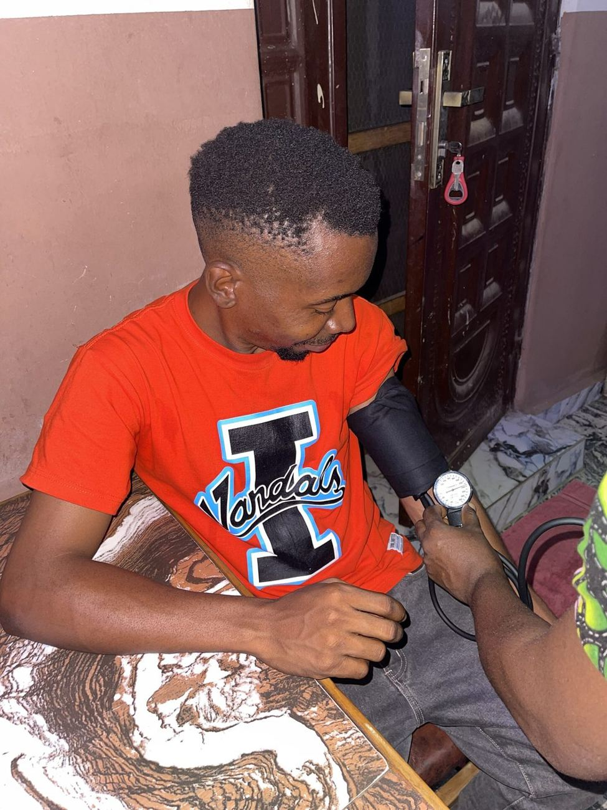
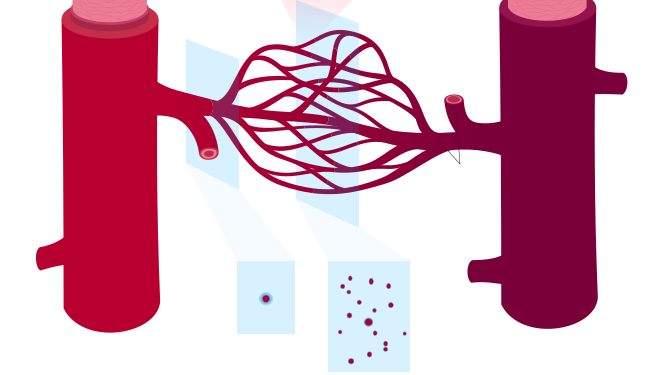
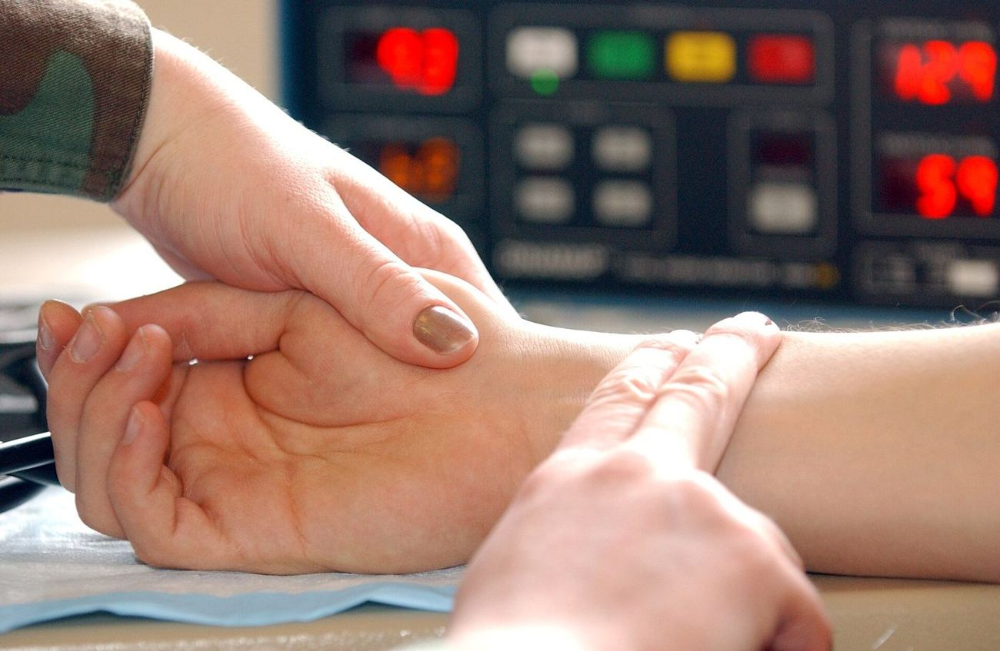
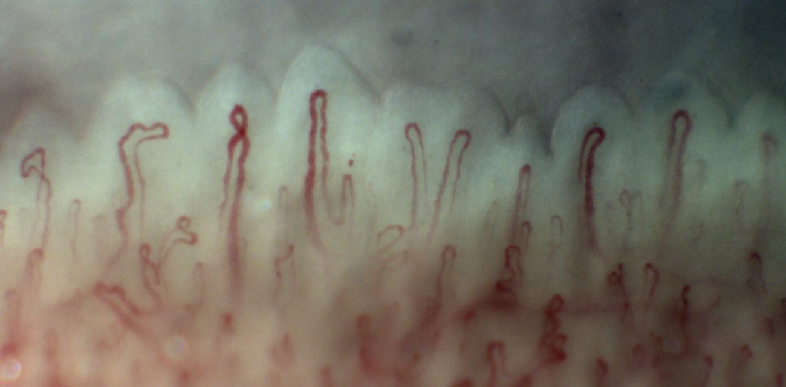
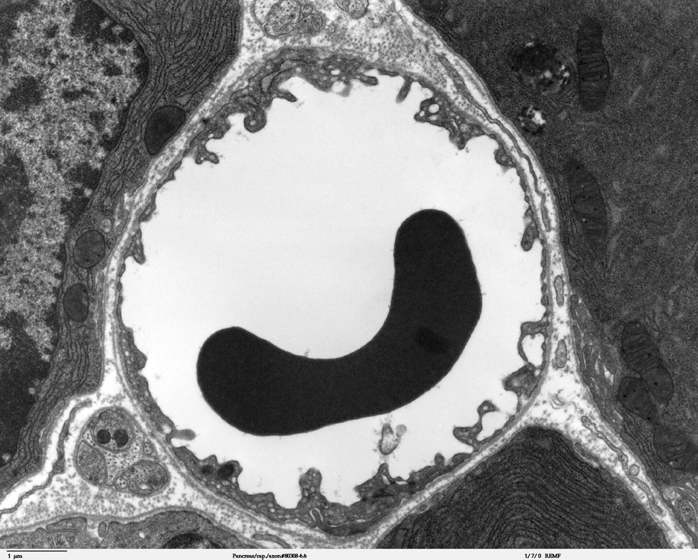
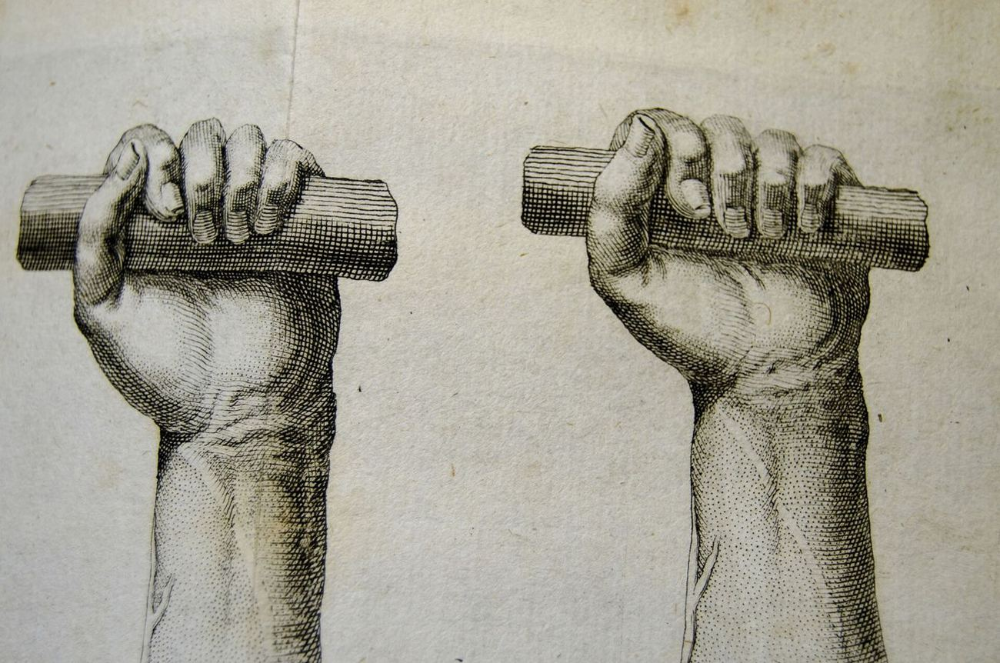
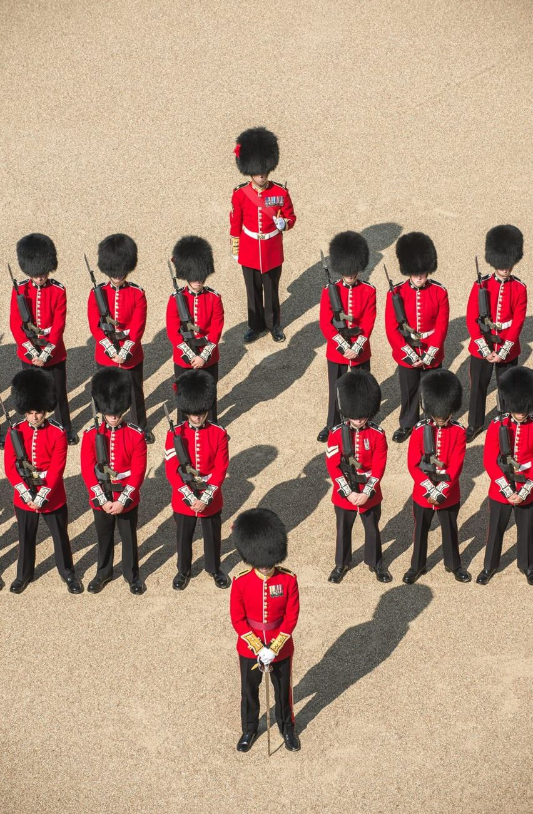

מהירות זרימה ולחץ דם
מה אומר 120/80?
ולמה הדם בנימים זורם הכי לאט?

שני פצועים
הדם פורץ בסילון, שקופץ בקצב הדופק.
הדם זורם בשקט וברציפות.
באיזה כלי דם נחתך כל אחד?
תפוקת הלב = קצב הלב × נפח פעימה
במנוחה: 70 פעימות × 70 מ״ל ≈ 5 ליטר בדקה.
כל הכמות הזו עוברת בכל דקה בעורקים, בנימים ובוורידים.

עורק ← עורקיקים ← נימים ← ורידונים ← וריד

עורקורידעורקיקיםנימיםורידוניםמי העורק ומי הווריד?
חתך רוחב אמיתי. ציינו שני סימנים במבנה.
א = וריד: דופן דקה, חלל רחב וצורה קורסת.
 אב
אבהלחץ שהדם מפעיל על דופן כלי הדם
החדר השמאלי מתכווץ ודוחס דם לאבי העורקים.
הדם מתחכך בדפנות, והלחץ יורד לאורך הדרך.
הדם זורם תמיד מלחץ גבוה ללחץ נמוך.
120 · לחץ סיסטולי: בזמן התכווצות החדרים.
80 · לחץ דיאסטולי: בזמן הרפיית החדרים.
היחידה: מ״מ כספית. יתר לחץ דם: 140/90 ומעלה, שוב ושוב.
שרוול, שחרור לאט, שני מספרים
הלחץ בשרוול גבוה מהלחץ בעורק. העורק נסגר.
הדם מתחיל לעבור בכל פעימה: זה הלחץ הסיסטולי.
הדם עובר ברציפות: זה הלחץ הדיאסטולי.
הלחץ לאורך הדרך
מבוסס על בגרות קיץ תשפ״ד, שאלה 27.
איפה הלחץ יורד בחדות?
אבי העורקים נמתח וחוזר
הדם שנכנס מותח את הדופן האלסטית, כמו בלון שמתנפח.
הדופן חוזרת לממדיה ודוחסת את הדם קדימה. הלחץ נשאר כ־80.
בגיל מבוגר הדופן נעשית קשיחה, והלחץ הסיסטולי עולה.
גל שעובר בדופן העורקים
בכל התכווצות של החדר השמאלי, דופן העורקים נמתחת. את הגל מרגישים בשורש כף היד.
⏱ נסו עכשיו: 15 שניות × 4

לוחצים באגודל על צינור השקיה: המים יוצאים מהר יותר
הנים הוא כלי הדם הצר ביותר.
האם בנימים הדם זורם הכי מהר?
כביש אחד שמתפצל ל־1,000 נתיבים
1,000 מכוניות בדקה. כולן נוסעות מהר.
אותן 1,000 מכוניות בדקה. בכל נתיב מכונית אחת שזוחלת.
שטח חתך כולל גדול ← זרימה איטית
83 סמ״ק בשנייה ÷ 2.5 סמ״ר
≈ 33 ס״מ בשנייה
83 סמ״ק בשנייה ÷ 2,500 סמ״ר
≈ 0.33 מ״מ בשנייה
83 סמ״ק בשנייה = 5 ליטר בדקה. ערכים מקורבים לפי Guyton.
תמונת מראה
שטח החתך הכולל גדל, המהירות קטנה. בוורידים הם מתאחדים, והמהירות עולה שוב.
מהירות הזרימה בנימים. באבי העורקים: פי 1,000 מהר יותר.
נים באורך מילימטר: הדם עובר בו בשנייה עד שלוש. בזמן הזה עוברים חומרים בין הדם לתאים.

תא דם אדום אחד ממלא את כל הנימית
דופן של שכבת תאים אחת · שטח פנים עצום · זרימה איטית.
שלושתם יחד: מעבר חומרים מהיר

לחץ כמעט אפס. איך הדם עולה מהרגליים?
משאבת השרירים: שרירי השלד מתכווצים ולוחצים על הוורידים.
מסתמים: נפתחים רק לכיוון הלב.

למה חיילים מתעלפים במסדר ארוך?

| עורקים | נימים | ורידים | |
|---|---|---|---|
| לחץ | הגבוה ביותר, עם תנודות | יורד מ־35 ל־15 | הנמוך ביותר |
| שטח חתך כולל | קטן | הגדול ביותר | בינוני |
| מהירות | הגבוהה ביותר | האיטית ביותר | עולה בהדרגה |
| דופן | עבה ואלסטית | שכבת תאים אחת | דקה, עם מסתמים |
איזה משפט על הנימים אינו נכון?
א. זרימת הדם בנימים מהירה יותר מזרימתו בוורידים.
ב. הקוטר של נים דומה לקוטר של תא דם אדום.
ג. שטח הפנים של כלל הנימים גדול מאוד.
ד. לנים יש דופן חד־שכבתית.